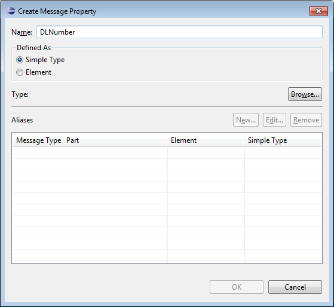

Correlation sets are used to identify ongoing conversations between a client and the BPEL process. Typically, a correlation is an element in a message that uniquely identifies the conversation between client and service; for example, an Order ID or Social Security Number. This also identifies a specific process instance being managed by the BPEL engine.
In many cases a single element of a message is not enough to make it unique, so correlations can be defined as composites of several fields. Since a conversation can involve many different types of messages. Different correlations will need to be defined for each message type.
To create a correlation for a messaging activity (for example: Invoke, Receive, Reply), select the activity and then click Add on the Correlation Detail property tab. This will display the Select a Property dialog.
You can select an existing property defined in the WSDL or click New to create a new WSDL property, which will display the Create Message Property dialog.

Enter a name for the new WSDL property and its type. Either an XSD simple type or an XML Schema element.
Next, click the Browse button to select a type. This will display the Type Selection dialog.
Click New in the Aliases section to create a new WSDL property alias.

Select either the Message Type , XSD Simple Type or XML scheme Element radio button and click Browse to select its type. Then click OK .